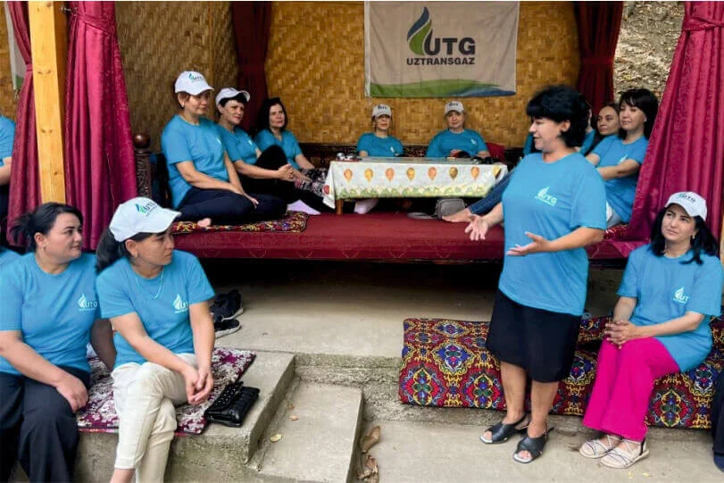
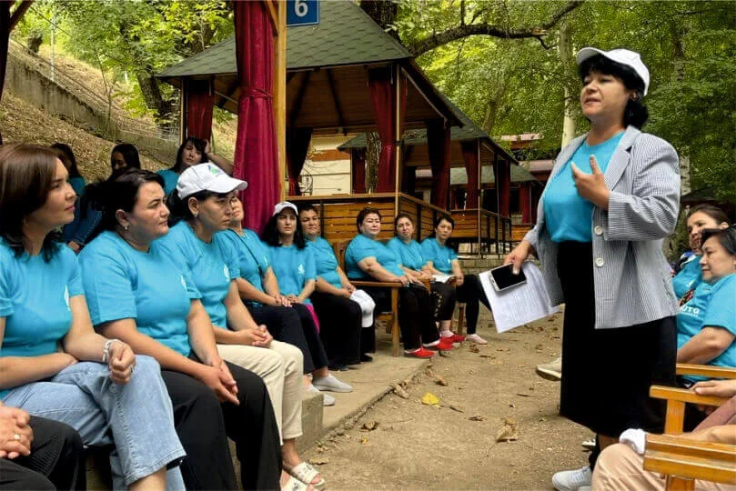
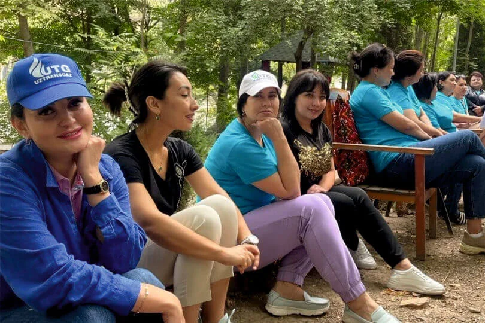
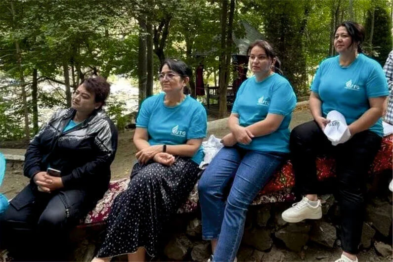
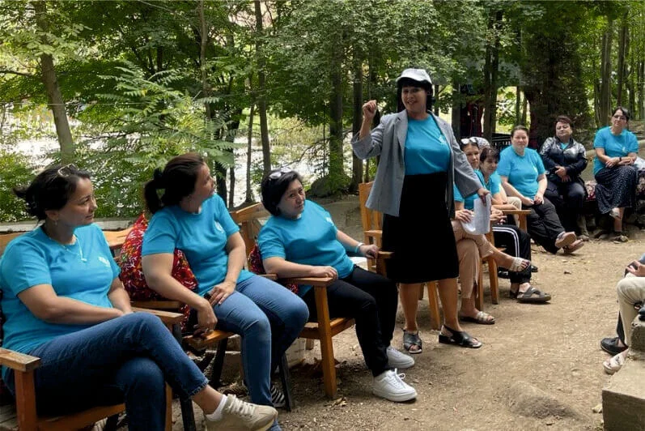

Respublika Prezidentining "2022/2026-yillarga mo‘ljallangan Yangi O‘zbekiston taraqqiyot strategiyasi to‘g‘risida"gi Farmonini “Inson qadrini ulug‘lash va faol mahalla yili”da amalga oshirishga oid Davlat dasturida belgilangan maqsadlardan biri – xotin-qizlarni qo‘llab-quvvatlash, ularning jamiyat hayotidagi faol ishtirokini taʼminlashga qaratilgan. Maqsad doirasida – o‘zbek jamiyatida xotin-qizlarga tazyiq va zo‘ravonlikka nisbatan murosasizlik muhitini yaratish, xotin-qizlarning huquq va qonuniy manfaatlarini taʼminlash. Gender tenglikni taʼminlash siyosatini davom ettirish, xotin-qizlarning ijtimoiy-siyosiy faolliginioshirish, ularni qo‘llab-quvvatlashga doir islohotlarni davom ettirish.
Xotin-qizlarning taʼlim va kasbiy ko‘nikma olishlari va boshqalarga har tomonlama ko‘maklashish, tadbirkorligini qo‘llab-quvvatlash, iqtidorli yosh xotin-qizlarni aniqlash va ularning qobiliyatlarini to‘g‘ri yo‘naltirish, ular o‘rtasida sog‘lom turmush tarzini taʼminlash borasidagi va shu kabi muhim vazifalarni amalga oshirish belgilangan. Xotin-qizlarga ijtimoiy-huquqiy, psixologik yordam ko‘rsatish, ularni manzilli qo‘llab-quvvatlash ham shular jumlasian
“Ayollar daftari” bilan manzilli ishlash, mutasaddi tashkilotlar tomonidan xotin-qizlarning muammolarini o‘z vaqtida bartaraf etish ustidan jamoatchilik nazoratini amalga oshirish kabi masalalar ko‘zda tutilganligi alohida eʼtiborga molikdir. Respublika Vazirlar Mahkamasining “Xotin-qizlar muammolarini o‘rganish va hal etish tizimini yanada takomillashtirish chora-tadbirlari to‘g‘risida”gi qarorida ham bu boradagi vazifalar aniq ifodalangan. Ushbu vazifalar ijrosi sifatida tashkil etilgan respublika-seminarida Nizomiy nomidagi TDPU dosenti, PFN R. Abdullayeva tomonidan “Psixologik barqarorlikni oshirish”, “Stressli vaziyatlarda bardoshlilikni oshirish” mavzularida treninglar o‘tkazildi. Ko‘tarinki kayfiyatda o‘tayotgan mashg‘ulotlar juda qiziqarli ma’lumotlarga boy bo‘lmoqda.
Tadbirda, shuningdek, gender tengligi mazmun-mohiyatining milliy talqini,mehnat huquqida ko‘zda tutilgan qonunlar mazmun-mohiyatini o‘rganish shular jumlasiga kiradi.
Muammoli vaziyatga doir rolli o‘yinlar orqali intensiv o‘qitish, guruh bo‘lib muhokama, video-qaytma aloqa; ishtirokchilar orasida pozitiv muhitni shakllantirish uchun psixogimnastik mashg‘ulotlar uyg‘unlashtirilgan holda olib borilyapti. O‘zaro fikr va tajriba almashish, dildan suhbatlar qurilmoqda.
Tadbir ishtirokchilarda katta taassurot qoldirmoqda